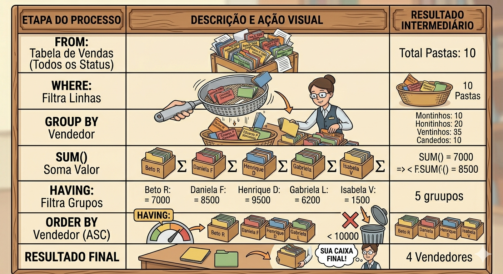
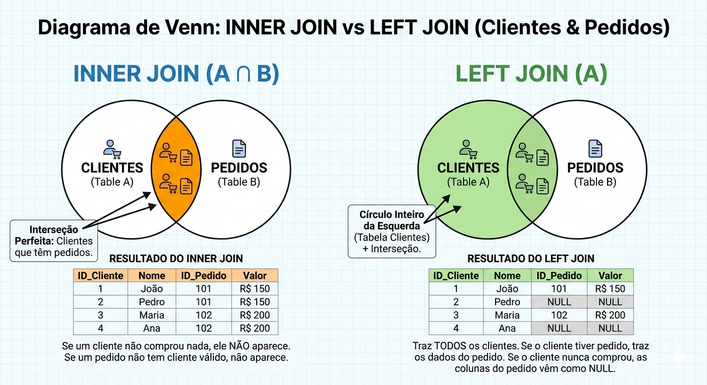

Descrição: Domínio da instrução SELECT para extração de relatórios estratégicos e cruzamento de dados relacionais utilizando cláusulas WHERE, ORDER BY, funções de agregação, GROUP BY, HAVING e a poderosa operação de JOIN.
A Linguagem de Consulta de Dados é a parte do SQL focada em extrair e visualizar informações. É aqui que o banco de dados mostra seu verdadeiro valor: a capacidade de encontrar uma agulha no palheiro em milissegundos. O DQL não altera absolutamente nada no seu banco. Ele é como uma lanterna: você ilumina os dados para enxergá-los, mas a luz não muda a cor ou o formato do que está sendo iluminado.
O SELECT é, sem dúvida, o comando mais utilizado em todo o universo SQL. Ele funciona como um filtro inteligente que responde às suas perguntas. E como ele funciona na prática?
Imagine que você está diante do arquivo de aço da biblioteca e faz um pedido ao arquivista: "Por favor, me mostre apenas o Título e o Preço de todos os livros que custam mais de R$ 50,00."
No mundo do SQL, esse pedido "traduzido" seria:
(Ilustração do funcionamento do comando SELECT como uma lanterna de dados)
No dia a dia, raramente queremos ver todos os dados de uma tabela. A cláusula WHERE é o nosso filtro horizontal: ela avalia cada linha da tabela e retorna apenas aquelas em que a nossa condição for verdadeira (TRUE). Ela economiza processamento do servidor e rede, enviando para o front-end apenas o necessário. Além dos operadores básicos (=, >, <), utilizamos operadores de padrão de texto como o LIKE (para buscas parciais, excelente para barras de pesquisa) e o BETWEEN (para faixas de valores, como períodos de datas ou faixas salariais).
Após filtrar, geralmente precisamos apresentar a informação de forma organizada para o usuário final. É aí que entra o ORDER BY, responsável por ordenar o Result Set (conjunto de resultados) de forma ascendente (ASC) ou descendente (DESC).
-- Selecionamos as colunas desejadas
SELECT nome, cargo, salario, data_contratacao
FROM funcionarios
-- Filtramos: Salário entre 3k e 8k E que o nome comece com a letra 'A'
WHERE salario BETWEEN 3000.00 AND 8000.00
AND nome LIKE 'A%'
-- Ordenamos primeiro por cargo (alfabética) e depois por salário (maior pro menor)
ORDER BY cargo ASC, salario DESC;Quando for usar o LIKE, evite colocar o curinga no início da string (ex: LIKE '%Silva'). Isso impede o banco de dados de usar os índices (Índices B-Tree), obrigando-o a ler a tabela inteira (Full Table Scan), o que destrói a performance do sistema.
Até agora, olhamos para as linhas individualmente. Mas o mundo dos negócios precisa de resumos e totalizadores. As Funções de Agregação (COUNT, SUM, AVG, MAX, MIN) pegam múltiplas linhas e as transformam em um único valor (ex: o total de vendas do mês).
O verdadeiro poder surge quando combinamos essas funções com o GROUP BY. Ele agrupa linhas que têm os mesmos valores em colunas específicas (ex: agrupar clientes por estado). E se precisarmos filtrar esses grupos resultantes? Usamos a cláusula HAVING. Diferente do WHERE (que filtra linhas antes de agrupar), o HAVING filtra os grupos após a agregação.

-- Queremos saber o total gasto e a quantidade de compras por cliente
SELECT cliente_id,
COUNT(pedido_id) AS total_pedidos,
SUM(valor_total) AS valor_gasto
FROM pedidos
-- Filtramos apenas os pedidos entregues (atuando linha a linha)
WHERE status = 'Entregue'
-- Agrupamos os dados por cliente
GROUP BY cliente_id
-- Filtramos APENAS os clientes (grupos) que gastaram mais de mil reais
HAVING SUM(valor_total) > 1000.00;Um dos erros mais clássicos de desenvolvedores júniores é tentar usar funções de agregação no WHERE (ex: WHERE SUM(valor) > 100). O banco vai estourar um erro de sintaxe. Lembre-se: WHERE é para linhas, HAVING é para agregações.
Na Fase de Normalização (aulas anteriores), nós separamos os dados em tabelas distintas para evitar anomalias (ex: tabela Clientes e tabela Pedidos). O JOIN é a operação que materializa o relacionamento entre essas entidades no momento da consulta, unindo as informações através de um atributo comum (geralmente ligando a Chave Primária - PK de uma tabela com a Chave Estrangeira - FK da outra).
Existem vários tipos de JOIN. O INNER JOIN é o mais comum: ele retorna apenas os registros que possuem correspondência exata em ambas as tabelas. Já os OUTER JOINS (como o LEFT JOIN) preservam os registros da tabela "da esquerda" mesmo que não encontrem correspondência na tabela "da direita", preenchendo os buracos com valores nulos (NULL).

-- Selecionando dados de tabelas diferentes usando Aliases
SELECT c.nome_cliente,
c.email,
p.data_pedido,
p.valor_total
-- Tabela "da esquerda" (Base)
FROM clientes AS c
-- Junção interna com a Tabela "da direita"
INNER JOIN pedidos AS p
-- Condição de Junção (A ponte entre elas usando PK e FK)
ON c.cliente_id = p.cliente_id
-- Opcional: Podemos continuar filtrando normalmente
WHERE p.valor_total > 500.00;A escolha entre INNER JOIN e LEFT JOIN nunca é apenas técnica; é uma decisão de negócio. Se o Product Manager (PM) pede um "Relatório de Vendas", use INNER JOIN. Se ele pede um "Relatório de Clientes e suas Vendas", use LEFT JOIN para não ocultar clientes inativos e acabar mascarando os números da empresa.
Pergunta: Eu posso usar o WHERE e o HAVING na mesma query?
Resposta: Sim, e é muito comum! O WHERE filtra os dados brutos antes do agrupamento (economizando processamento), e o HAVING atua como um filtro final depois que os cálculos matemáticos do agrupamento já foram feitos.
Pergunta: Na prática real, usamos mais INNER JOIN ou LEFT JOIN?
Resposta: Depende do relatório, mas LEFT JOIN é criticamente útil para encontrar "inconsistências" ou "ausências" de ações. Por exemplo: "Liste todos os clientes (LEFT JOIN compras) ONDE a data da compra É NULA". Isso retorna exatamente os clientes que abandonaram a loja.
Pergunta: Posso usar o Alias criado no SELECT dentro do WHERE?
Resposta: Na maioria dos bancos relacionais (como PostgreSQL, SQL Server e MySQL), não. O banco de dados processa o WHERE antes do SELECT. Portanto, no momento de filtrar, o apelido ainda não "existe" para o servidor. Mas você pode usá-lo no ORDER BY!
Pergunta: Qual a diferença entre COUNT(*) e COUNT(coluna)?
Resposta: O COUNT(*) conta todas as linhas do seu resultado, indiscriminadamente. Já o COUNT(nome_da_coluna) conta apenas as linhas onde essa coluna específica não é nula (NOT NULL).
Pergunta: Fazer muitos JOINs deixa o sistema lento?
Resposta: Sim. Cruzar 10, 15 tabelas cria produtos cartesianos massivos. Por isso a importância da nossa aula anterior de Arquitetura e Modelagem. Um banco mal modelado exige muitos JOINS. Para contornar lentidão justificada, criamos Índices (INDEX) nas Chaves Estrangeiras, o que acelera a ponte absurdamente.
A lista de exercícios da aula será apresentada separado.
Esta aula impacta diretamente na Matriz da sua Avaliação Prática (SA). Vocês entregarão o sistema completo. O "Dashboard" que vocês estão programando no front-end não servirá de nada se o backend não conseguir extrair os dados organizados do banco. As queries de relatório que usarão múltiplos cruzamentos (JOINs) e estatísticas (Agregações) são os motores de inteligência de negócios do projeto de vocês. Sem o que vimos hoje, a aplicação de vocês seria apenas um formulário de cadastro, não um sistema corporativo.